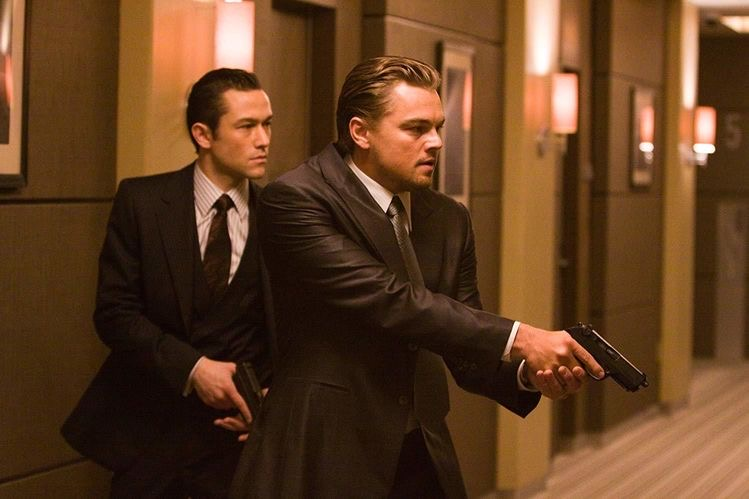
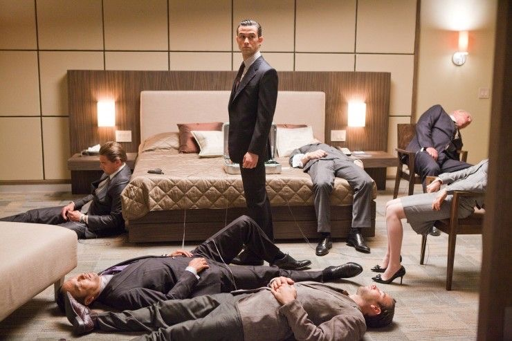

Inception is a 2010 science fiction action film written and directed by Christopher Nolan, who also produced the film with Emma Thomas, his wife. The film stars Leonardo DiCaprio as a professional thief who steals information by infiltrating the subconscious of his targets. He is offered a chance to have his criminal history erased as payment for the implantation of another person's idea into a target's subconscious. The ensemble cast includes Ken Watanabe, Joseph Gordon-Levitt, Marion Cotillard, Elliot Page, Tom Hardy, Dileep Rao, Cillian Murphy, Tom Berenger, and Michael Caine. After the 2002 completion of Insomnia, Nolan presented to Warner Bros. a written 80-page treatment for a horror film envisioning "dream stealers," based on lucid dreaming. Deciding he needed more experience before tackling a production of this magnitude and complexity, Nolan shelved the project and instead worked on 2005's Batman Begins, 2006's The Prestige, and The Dark Knight in 2008. The treatment was revised over 6 months and was purchased by Warner in February 2009. Inception was filmed in six countries, beginning in Tokyo on June 19 and ending in Canada on November 22. Its official budget was $160 million, split between Warner Bros. and Legendary. Nolan's reputation and success with The Dark Knight helped secure the film's US$100 million in advertising expenditure. Inception's premiere was held in London on July 8, 2010; it was released in both conventional and IMAX theaters beginning on July 16, 2010. Inception grossed over $828 million worldwide, becoming the fourth-highest-grossing film of 2010. Considered one of the best films of the 2010s, Inception received critical praise for its screenplay, direction, themes, action sequences, visual effects, musical score, and the performances of the ensemble cast. It won four Academy Awards (Best Cinematography, Best Sound Editing, Best Sound Mixing, and Best Visual Effects) and was nominated for four more: Best Picture, Best Original Screenplay, Best Art Direction, and Best Original Score.
The story can either be told in a few sentences, or not told at all. Here is a movie immune to spoilers: If you knew how it ended, that would tell you nothing unless you knew how it got there. And telling you how it got there would produce bafflement. The movie is all about process, about fighting our way through enveloping sheets of reality and dream, reality within dreams, dreams without reality. It's a breathtaking juggling act, and Nolan may have considered his "Memento" (2000) a warm-up; he apparently started this screenplay while filming that one. It was the story of a man with short-term memory loss, and the story was told backwards. Like the hero of that film, the viewer of "Inception" is adrift in time and experience. We can never even be quite sure what the relationship between dream time and real time is. The hero explains that you can never remember the beginning of a dream, and that dreams that seem to cover hours may only last a short time. Yes, but you don't know that when you're dreaming. And what if you're inside another man's dream? How does your dream time synch with his? What do you really know?
 The story can either be told in a few sentences, or not told at all. Here is a movie immune to spoilers: If you knew how it ended, that would tell you nothing unless you knew how it got there. And telling you how it got there would produce bafflement. The movie is all about process, about fighting our way through enveloping sheets of reality and dream, reality within dreams, dreams without reality. It's a breathtaking juggling act, and Nolan may have considered his "Memento" (2000) a warm-up; he apparently started this screenplay while filming that one. It was the story of a man with short-term memory loss, and the story was told backwards. Like the hero of that film, the viewer of "Inception" is adrift in time and experience. We can never even be quite sure what the relationship between dream time and real time is. The hero explains that you can never remember the beginning of a dream, and that dreams that seem to cover hours may only last a short time. Yes, but you don't know that when you're dreaming. And what if you're inside another man's dream? How does your dream time synch with his? What do you really know?